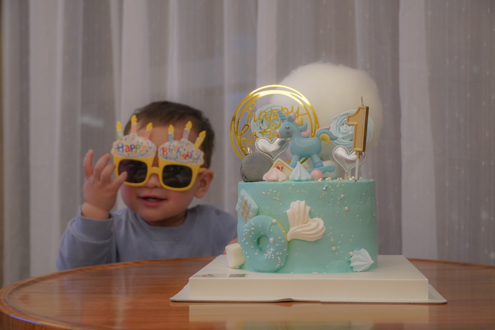

Days at Orenda
Days at Orenda
This photo was shot during my trip with my family to Orenda, a resort on the nearby Chong Ming Island. When I was little, my parents used to tell me all sorts of things about their childhood, especially the living environment which tended to be idyllic. They were telling me how lives were like on the farm and their houses were adjacent to the farm to prevent stealers. The man in the frame were spraying fertilizer on the plants, which brought me back to my parents’ era, and allowed me to experience the slow-paced country life that I had never experienced before.
Digital photo by SONY A6400 (F5.6 1/250 ISO-2000)

I took a day trip with my cousin to Song Jiang Film Studio where all the movies and television series about the Republic China era were made. When all the walk-on actors who dressed up with cheongsam walked by me, I felt I've gone back in time. I soon raised my camera and shot this photo, and later increased the contrast ratio and adjusted the color in order to match the color of old Chinese films.
Digital photo by SONY A6400 (F5.6 1/250 ISO-200)

Infinite End
Looking at the three famous buildings of Shanghai from the bottom view, it seems that they have infinite end. By using fish-eye lens, I was able to fill all three of the tallest buildings into the frame. It brought me back the memory when I first arrived in Shanghai seven years ago. The city was infinite, modern, and unfamiliar. That’s the reason why I edited the photo in cold tone to reflect that I was afraid to imagine the unexpected future here. However, I purposefully maintained the street lights as orange color, to suggest the warmth and a sense of belonging I now feel in this city.
Digital photo by Canon EOS 6D MARK II (F5.0 0.6 ISO-100)

Sudden Rain
This photo was shot in a sudden rainstorm while I was having a late-night snack at a restaurant near the street. I leaned my camera to the knee level and zoomed in to capture the rain droplets. The red and green traffic light is reflected on the ground, which symbolizes the busyness of the metropolitan, that even at late night, the city is still full of lights.
Digital photo by SONY A6400 (F5.6 1/80 ISO-6400)

Real HIM
Inner emotions are difficult to release in the fast pace society, and what you show outside does not represent your true feelings. I stood 45 degrees right behind my brother Adam, in order to capture him and his reflection in the mirror. On the left side of the photo, he’s positively smiling in color to offer a sense of reality, while in the mirror, which signifies the interior of Adam, reflects his real feelings from within in black and white color. I edited this photo to show the big contrast between the inside and outside, as people’s health can be very different from what they seem on surface, and I want to use this picture to encourage the viewers to care more about the ones in their life.
Digital photo by Sony A6400 (F3.5 1/8 ISO-800)

West Nan Jing Rd.
This is a combination of two photos, and the structure in the picture is located on West Nanjing Road—a traditional and popular road that leads to the Bund. The picture on the left is a modern image of the structure and the one on the right is from the 40s, which shows no significant difference. I used the outline of the building and carefully edited them together to demonstrate the seamlessness. It is a special place that has been preserved despite the fast developing metropolitan, and these billboards make me reminiscing the time that I have missed.
Digital photos by SONY A6400

I love SH

Little brother's first birthday

6:08 A.M.

5:34 A.M.

{kind=link}